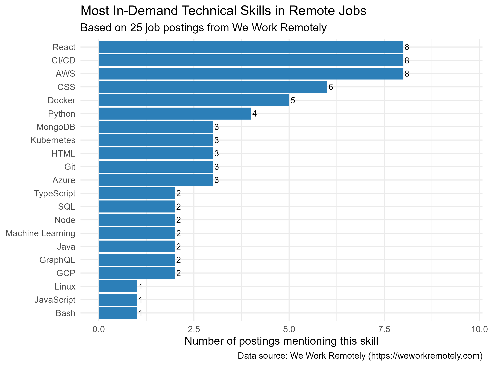
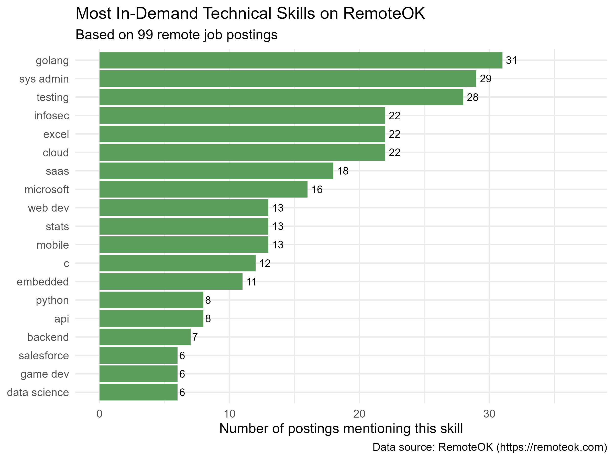
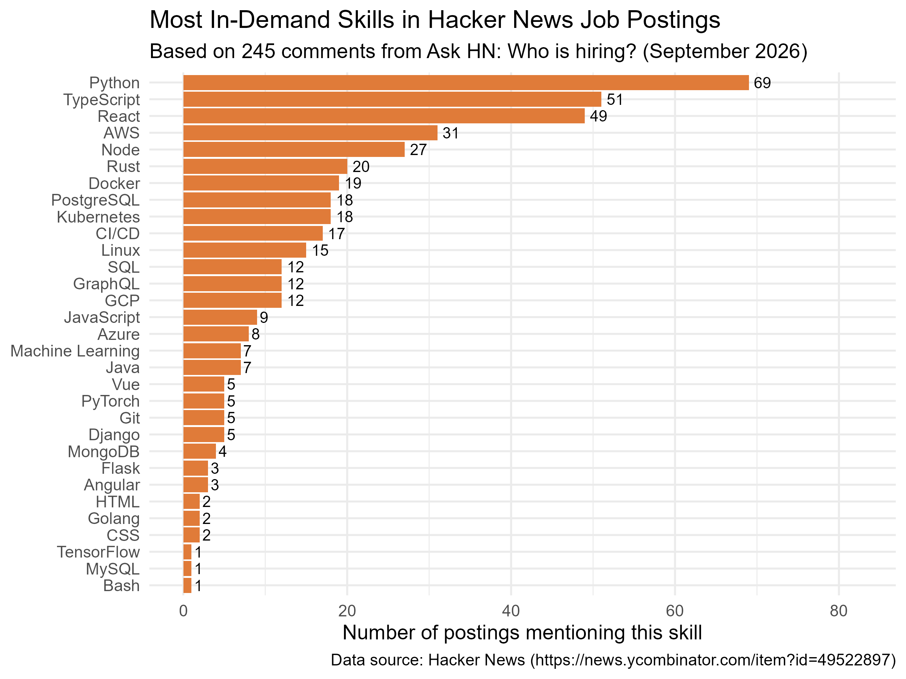

Which Technical Skills Are Most In Demand in Tech Hiring?
Introduction
Tech hiring has always been competitive, but the skills employers ask for shift constantly. With hundreds of languages, frameworks, and tools competing for attention, it is hard to know where to focus your learning.
This analysis scrapes job postings from three independent sources to answer a simple question:
Which technical skills appear most frequently in tech job postings?
The answer turns out to be surprisingly consistent across platforms.
Where the Data Comes From
I collected job postings from three different platforms, each representing a different slice of the tech hiring market:
| Source | What it covers | Postings |
|---|---|---|
| RemoteOK | A curated remote-first job board with structured skill tags | 99 |
| We Work Remotely | A remote-only job board with detailed descriptions | 25 |
| Hacker News “Who is Hiring?” | Global startup and tech hiring, updated monthly | 245 |
Together these sources cover a wide range of employers: from remote-first startups to established tech companies and traditional firms hiring across onsite, hybrid, and remote arrangements.
Three sources are better than one. Each platform attracts a different kind of employer, so combining them reduces the risk of drawing conclusions from a single, biased sample.
The Skills That Keep Appearing
The clearest pattern across all three datasets is the dominance of Python. It appears in 69 of the 245 Hacker News postings (28%), and it ranks among the top skills on the other two platforms as well.
Let’s look at each source in turn.
We Work Remotely: 25 Remote Tech Postings

React leads the pack, appearing in 40% of postings, followed closely by AWS and CI/CD. The pattern here points to a cloud-native, frontend-heavy skill set — exactly what you would expect from a remote-only job board.
RemoteOK: 99 Remote-First Postings

RemoteOK’s tag data tells a different story. Go and system administration dominate, reflecting a user base of infrastructure engineers and DevOps specialists. Backend skills are more prominent here than on the other platforms.
Hacker News: 245 Global Tech Postings

The Hacker News sample is the largest and most diverse. Python leads with 69 mentions (28%), followed by TypeScript and React. This is the startup-heavy, full-stack profile — engineers who are expected to work across the entire product.
How the Three Platforms Compare
The most interesting finding is not what the platforms agree on, but where they differ.
| Platform | Most distinctive skill | Likely reason |
|---|---|---|
| We Work Remotely | React (40% of postings) | Curated board attracts design-forward companies |
| RemoteOK | Go / sys admin | User base of infrastructure engineers |
| Hacker News | Python (28% of postings) | Startup-heavy community, full-stack roles |
The takeaway: There is no single “tech job market.” Different platforms serve different segments, and the skills that matter depend on which segment you are targeting.
What This Means If You’re Learning
If you are preparing for a career in tech — or planning what to study next — the data suggests a clear priority order:
1. Learn Python first. It is the only language that appears near the top of every platform. It works for backend engineering, data analysis, automation, and increasingly for AI.
2. Add React. Frontend skills are not optional. Even backend-leaning roles increasingly expect familiarity with a modern JavaScript framework.
3. Build cloud and DevOps literacy. AWS, Docker, and CI/CD appear together so often that they are effectively a single requirement. You do not need to be a specialist, but you do need to be comfortable.
4. Learn one database well. PostgreSQL is the safest choice, but MongoDB is also common. The specific choice matters less than having real experience with schema design and queries.
What This Analysis Cannot Tell You
A few honest limitations:
- It is a snapshot. The data was collected in September 2026 and reflects one moment in a fast-moving market.
- Job postings are not hires. Employers list many skills they never actually test for. Advertised demand is a rough proxy for real demand.
- Keyword counting is imprecise. A posting that mentions “Python” once counts the same as one that mentions it ten times.
- Not all postings are remote. The Hacker News sample includes onsite and hybrid roles. This makes the findings broader, but less specific to remote-only hiring.
These limitations do not undermine the findings — the patterns are strong enough to be meaningful — but they are worth keeping in mind.
Conclusion
Across three independent data sources and nearly 400 job postings, the same skills keep appearing: Python, React, AWS, Docker, and CI/CD.
The specific mix varies by platform, but the core toolkit is remarkably consistent. For anyone preparing for a career in tech, the path is clear: start with Python, add frontend and cloud skills, and build real projects that demonstrate you can ship.
The data does not predict the future. But it does describe the present — and the present is a good place to start.
Data sources: RemoteOK, We Work Remotely, and Hacker News. All scraping was done ethically using public RSS feeds, APIs, and HTML pages.